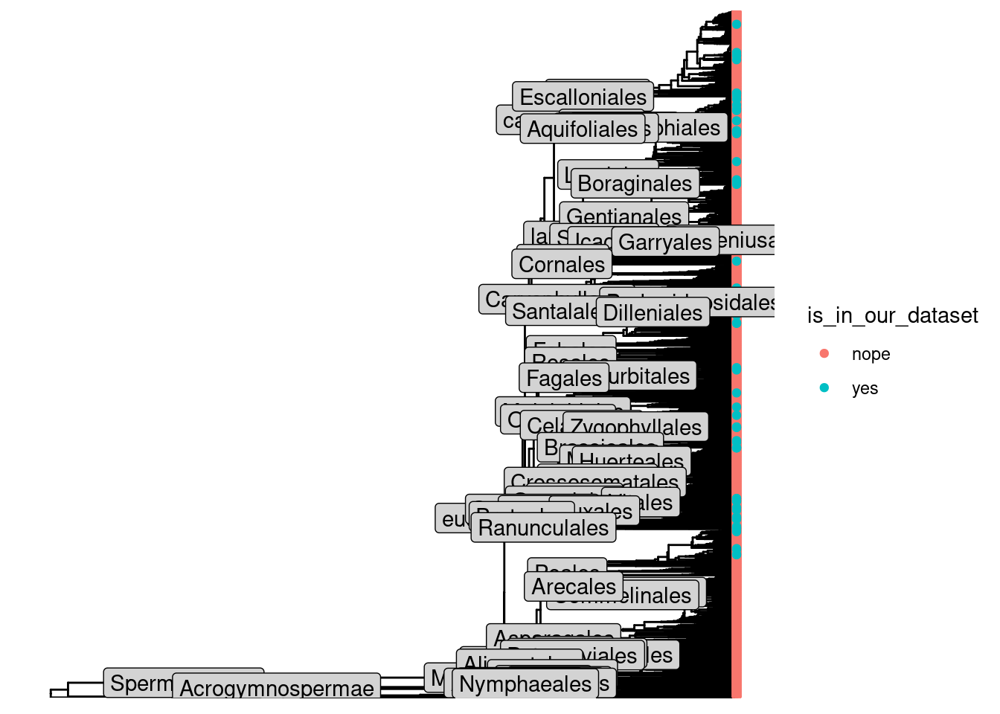

INHERSEED
Introduction
Plant microbial INHERitance across generations through SEEDs: impact of this primary inoculum on plant fitness and microbiota assembly
This document acts as a wiki-like platform regarding all protocols and data treatment within the INHERSEED project. The project is lead by Marie Simonin (PI - website, Tristan Lafont Rapnouil is a post-doc in charge of monitoring the project progress and data acquisition and, Mathilde Brunel is a technician involved in greenhouse managing and wetlab experimentations.
While not all data and protocols can be hosted on Github, links to where they are actually findable are persented in this document.
For any questions related to this project, you can contact marie.simonin@inrae.fr and/or tristan.lafontrapnouil@gmail.com.
Project Overview
Data framework
Fair principles
INHERSEED aims to respect the FAIR principles for open science.

To do so we share in the present document protocols, raw data, processing scripts/procedures and, processed data as used in resulting articles Figure 2.2.

Full original project proposal: INSERT A FILE
The Data Management Plan: INSERT A FILE.
R session info: INSERT A FILE.
Deliverable of the project are:
Data, protocols and workflows:
- github hosted document (Text)
- Metabarcoding dataset: amplicon sequencing dataset as .fastq for gyrB and ITS1 markers (Dataset)
- Seed and plant phenotype as .csv (Dataset)
- Processing scripts and pipelines (Python, Bash and R) (Workflow)
- Protocols for all data acquisition (Text)
Results:
- WP1:
- Plant taxonomy and traits influence on seed microbiota
- Assessment of microbial transmission from plants to seeds
- Exploring phylosymbiosis on seed microbiota
- WP2:
- Evaluation of microbial transmission from seeds to seedlings
- Inherited and non-inherited taxa transmission success
- Exploring phylosymbiosis on seedling microbiota
- Identification of microbial taxa with potential effects on seedling phenotypes
- WP3:
- Experimental validation of vertical transmission of inherited taxa
- Identification of inherited taxa affecting plant fitness
- Identification of inherited taxa influencing microbiota assembly
- WP1:
Links to data info
- [Project proposal][document/full_proposal/aapg_20203-INHERSEED_full_proposal.pdf]
- [Original seeds sources][]
- [species list][]
- [suppliers][]
- [Seed phenotype][]
- [Seed pictures][]
- [TRAITOR software][]
- [DNA extractions][]
- [Seeds][]
- [Leaves][]
- [Roots][]
- [Soil][]
- [Plant phenotype][]
- [R script to download all datasets][]
Plant species
XX plant species were used in INHERSEED. This represent a challenge both to grow and monitor such diversity as well as to sample and properly phenotype plants and seeds varying tremendously in size, shapes and looks. Acknowledging this challenge we tried to adopt protocols and data viewing/analysis allowing to compare Arabidopsis, carrots or beans. That being said, we recognize that critics can still be made and our results should be regarded with the diversity-challenge in mind!
The full species list:
We focused on non-woody annual species and tried to have a good spread across the Angiosperm phylogeny:
Code
#get our species list
species_list <- readr::read_tsv("data/species_list_INHERSEED.tsv")Rows: 88 Columns: 1
── Column specification ────────────────────────────────────────────────────────
Delimiter: "\t"
chr (1): species_for_tree
ℹ Use `spec()` to retrieve the full column specification for this data.
ℹ Specify the column types or set `show_col_types = FALSE` to quiet this message.Code
species_list |>
mutate(species=species_for_tree,
genus=gsub(" ","",stringr::str_remove(species_for_tree,"(?<=\\s).*"))) |>
mutate(genus=ifelse(is.na(genus),species,genus)) ->
species_list
#load family info
ordered_list <- readxl::read_xlsx("data/monitoring_and_info.xlsx",sheet = 2) |> #
select(c(2:5))
#add family
species_list |>
left_join(ordered_list) |>
unique() ->
species_listJoining with `by = join_by(species_for_tree)`Code
library(ggtree)ggtree v3.16.0 Learn more at https://yulab-smu.top/contribution-tree-data/
Please cite:
Guangchuang Yu. Using ggtree to visualize data on tree-like structures.
Current Protocols in Bioinformatics. 2020, 69:e96. doi:10.1002/cpbi.96
Attachement du package : 'ggtree'
L'objet suivant est masqué depuis 'package:tidyr':
expandCode
library(fastmatch)
Attachement du package : 'fastmatch'
L'objet suivant est masqué depuis 'package:dplyr':
coalesceCode
# using modified rtrees::get_tree function
# giving values to arguments (see ?rtrees::get_tree)
taxon <- "Plant"
scenario <- "at_basal_node"
show_grafted <- TRUE
tree_by_user <- FALSE
mc_cores <- future::availableCores() - 2
.progress <- "text"
fish_tree <- c("timetree", "all-taxon")
mammal_tree <- c("vertlife",
"phylacine")
bee_tree <- c("maximum-likelihood", "bootstrap")
dt <- TRUE
# ------------
#get the plant tree
tree <- megatrees::tree_plant_otl
# get genera
tree_genus <- unique(gsub("^([-A-Za-z]*)_.*$", "\\1", tree$tip.label))
# get species list
sp_list <- rtrees::sp_list_df(unique(species_list))
# check if all genera are in the megatree
all_genus_in_tree <- all(unique(sp_list$genus) %fin% tree_genus)
# ------------
#Run the function step by step
if (!is.null(taxon)) {
if (!taxon %fin% rtrees::taxa_supported & !all_genus_in_tree) {
new_cls = unique(dplyr::select(sp_list, genus, family))
new_cls$taxon = taxon
classifications <- dplyr::bind_rows(rtrees::classifications,
new_cls)
}
}
# species not in the megatree
sp_out_tree <- sp_list[!sp_list$species %fin% tree$tip.label,]
subsp_in_tree <- grep("^.*_.*_.*$", x = tree$tip.label, value = T)
if (length(subsp_in_tree)) {
sp_out_tree <- dplyr::mutate(sp_out_tree, re_matched = NA,
matched_name = NA)
for (i in 1:length(sp_out_tree$species)) {
name_in_tree <- grep(paste0("^", sp_out_tree$species[i],
"_"), x = subsp_in_tree, ignore.case = T, value = T)
if (length(name_in_tree)) {
sp_out_tree$re_matched[i] = TRUE
sp_out_tree$matched_name[i] = sample(name_in_tree,
1)
tree$tip.label[tree$tip.label == sp_out_tree$matched_name[i]] = sp_out_tree$species[i]
if (!is.null(tree$genus_family_root)) {
tree$genus_family_root$only_sp[tree$genus_family_root$only_sp ==
sp_out_tree$matched_name[i]] = sp_out_tree$species[i]
}
}
}
sp_out_tree = dplyr::distinct(sp_list[!sp_list$species %fin%
tree$tip.label, ])
}
close_sp_specified = close_genus_specified = FALSE
if ("close_sp" %fin% names(sp_out_tree)) {
close_sp_specified = TRUE
sp_out_tree$close_sp = cap_first_letter(gsub(" +", "_",
sp_out_tree$close_sp))
}
sp_out_tree$status <- ""
tree_df <- tidytree::as_tibble(tree)
tree_df$is_tip <- !(tree_df$node %fin% tree_df$parent)
node_hts <- ape::branching.times(tree)
all_eligible_nodes <- unique(c(tree$genus_family_root$basal_node,
tree$genus_family_root$root_node))
n_spp_to_show_progress <- 200
if (nrow(sp_out_tree) > n_spp_to_show_progress) {
progress <- create_progress_bar(.progress)
progress$init(nrow(sp_out_tree))
on.exit(progress$term())
}
for (i in 1:nrow(sp_out_tree)) {
if (nrow(sp_out_tree) > n_spp_to_show_progress)
progress$step()
where_loc_i = where_loc_i2 = NA
if (close_sp_specified) {
if (!is.na(sp_out_tree$close_sp[i]) & sp_out_tree$close_sp[i] %fin%
tree$tip.label) {
where_loc_i = sp_out_tree$close_sp[i]
}
}
if (close_genus_specified) {
if (!is.na(sp_out_tree$close_genus[i]) & sp_out_tree$close_genus[i] !=
"" & sp_out_tree$close_genus[i] %fin% tree_genus) {
sp_out_tree$genus[i] = sp_out_tree$close_genus[i]
where_loc_i2 = sp_out_tree$close_genus[i]
}
else {
if (!is.na(sp_out_tree$close_genus[i]))
warning("The genus specified for ", sp_out_tree$species[i],
" is not in the phylogeny.")
}
}
if (!all_genus_in_tree & is.na(where_loc_i) & is.na(where_loc_i2)) {
if (is.na(sp_out_tree$family[i]) | !sp_out_tree$family[i] %fin%
tree$genus_family_root$family) {
sp_out_tree$status[i] = "No co-family species in the mega-tree"
(next)()
}
}
node_label_new = NULL
add_above_node = FALSE
fraction = 1/2
if (sp_out_tree$genus[i] %fin% tree$genus_family_root$genus |
!is.na(where_loc_i2) | !is.na(where_loc_i)) {
sp_out_tree$status[i] = "*"
idx_row = which(tree$genus_family_root$genus ==
sp_out_tree$genus[i])
root_sub = tree$genus_family_root[idx_row, ]
if (root_sub$n_spp == 1 | !is.na(where_loc_i)) {
if (!is.na(where_loc_i)) {
where_loc = where_loc_i
new_ht = tree_df$branch.length[tree_df$label ==
where_loc_i] * (1 - fraction)
node_hts = c(new_ht, node_hts)
node_label_new = paste0("N", length(node_hts))
names(node_hts)[1] = node_label_new
all_eligible_nodes = c(all_eligible_nodes,
node_label_new)
add_above_node = TRUE
if (!sp_out_tree$genus[i] %fin% tree$genus_family_root$genus) {
tree$genus_family_root = tibble::add_row(tree$genus_family_root,
family = sp_out_tree$family[i], genus = sp_out_tree$genus[i],
basal_node = node_label_new, basal_time = new_ht,
root_node = tree_df$label[tree_df$node ==
tree_df$parent[tree_df$label == where_loc_i]],
root_time = tree_df$branch.length[tree_df$node ==
tree_df$parent[tree_df$label == where_loc_i]],
n_genus = 1, n_spp = 1, only_sp = sp_out_tree$species[i])
}
}
else {
where_loc = root_sub$only_sp
new_ht = root_sub$basal_time * (1 - fraction)
node_hts = c(new_ht, node_hts)
node_label_new = paste0("N", length(node_hts))
names(node_hts)[1] = node_label_new
all_eligible_nodes = c(all_eligible_nodes,
node_label_new)
add_above_node = TRUE
tree$genus_family_root$only_sp[idx_row] = NA
tree$genus_family_root$basal_node[idx_row] = node_label_new
tree$genus_family_root$basal_time[idx_row] = unname(new_ht)
}
}
else {
where_loc = root_sub$basal_node
if (scenario == "random_below_basal") {
tree_df_sub = tidytree::offspring(tree_df,
where_loc)
tree_df_sub = tree_df_sub[tree_df_sub$is_tip ==
FALSE, ]
if (nrow(tree_df_sub) > 0) {
potential_locs = c(where_loc, tree_df_sub$label)
bls = tree_df_sub$branch.length
names(bls) = tree_df_sub$label
bls = c(root_sub$root_time - root_sub$basal_time,
bls)
names(bls)[1] = root_sub$basal_node
prob = bls/sum(bls)
where_loc = sample(potential_locs, 1, prob = prob)
}
}
}
}
else {
sp_out_tree$status[i] = "**"
idx_row = which(tree$genus_family_root$family ==
sp_out_tree$family[i] & is.na(tree$genus_family_root$genus))
root_sub = tree$genus_family_root[idx_row, ]
if (root_sub$n_spp == 1) {
where_loc = root_sub$only_sp
new_ht = root_sub$basal_time * (1 - fraction)
node_hts = c(new_ht, node_hts)
node_label_new = paste0("N", length(node_hts))
names(node_hts)[1] = node_label_new
all_eligible_nodes = c(all_eligible_nodes, node_label_new)
add_above_node = TRUE
tree$genus_family_root = tibble::add_row(tree$genus_family_root,
family = sp_out_tree$family[i], genus = sp_out_tree$genus[i],
basal_node = node_label_new, basal_time = unname(new_ht),
root_node = node_label_new, root_time = unname(new_ht),
n_genus = 1, n_spp = 1, only_sp = sp_out_tree$species[i])
}
else {
where_loc = root_sub$basal_node
if (scenario == "random_below_basal") {
tree_df_sub = tidytree::offspring(tree_df,
where_loc)
tree_df_sub = tree_df_sub[tree_df_sub$is_tip ==
FALSE, ]
if (nrow(tree_df_sub) > 0) {
potential_locs = intersect(c(where_loc,
tree_df_sub$label), all_eligible_nodes)
locs_bl = tree_df_sub[tree_df_sub$label %fin%
potential_locs, ]
bls = locs_bl$branch.length
names(bls) = locs_bl$label
bls = c(root_sub$root_time - root_sub$basal_time,
bls)
names(bls)[1] = root_sub$basal_node
prob = bls/sum(bls)
where_loc = sample(potential_locs, 1, prob = prob)
}
}
}
tree$genus_family_root$n_genus[idx_row] = tree$genus_family_root$n_genus[idx_row] +
1
}
if (root_sub$n_spp > 3)
use_castor = TRUE
else use_castor = FALSE
if (dt) {
tree_df = rtrees::bind_tip(tree_tbl = tree_df, node_heights = node_hts,
where = where_loc, new_node_above = add_above_node,
tip_label = sp_out_tree$species[i], frac = fraction,
return_tree = FALSE, node_label = node_label_new,
use_castor = use_castor)
}
tree$genus_family_root$n_spp[idx_row] = tree$genus_family_root$n_spp[idx_row] + 1
}
tree_df <- dplyr::arrange(tree_df, node)
if (any(sp_out_tree$status == "*")) {
message("\n", sum(sp_out_tree$status == "*"), " species added at genus level (*) \n")
}
13 species added at genus level (*) Code
if (any(sp_out_tree$status == "**")) {
message(sum(sp_out_tree$status == "**"), " species added at family level (**) \n")
}3 species added at family level (**) Code
tree_sub <- tidytree::as.phylo(tree_df)
grafted <- sp_out_tree[sp_out_tree$status %fin% c("*", "**"),]
grafted$sp2 = paste0(grafted$species, grafted$status)
wid <- which(tree_sub$tip.label %fin% grafted$species)
tree_sub$tip.label[wid] = dplyr::left_join(tibble::tibble(species = tree_sub$tip.label[wid]), grafted, by = "species")$sp2
graft_status <- tibble::tibble(tip_label = tree_sub$tip.label)
graft_status$species <- gsub("\\*", "", graft_status$tip_label)
graft_status$status <- ifelse(grepl("\\*{2}$",graft_status$tip_label),
"grafted at family level",
ifelse(grepl("[^*]\\*{1}$",graft_status$tip_label),
"grafted at genus level",
"exisiting species in the megatree"))
if (any(sp_out_tree$status == "No co-family species in the mega-tree")) {
sp_no_family = sp_out_tree$species[sp_out_tree$status =="No co-family species in the mega-tree"]
message(length(sp_no_family),
" species have no co-family species in the mega-tree,
skipped\n(if you know their family,
prepare and edit species list with `rtrees::sp_list_df()` may help): \n",
paste(sp_no_family, collapse = ", "))
graft_status <- dplyr::bind_rows(graft_status,
data.frame(species = sp_no_family,
status = rep("skipped as no co-family in the megatree",
length(sp_no_family))))
}
if (!show_grafted) {
tree_sub <- rm_stars(tree_sub)
graft_status$tip_label = gsub("\\*", "", graft_status$tip_label)
}
tree_sub$graft_status = graft_status
tree_sub <- ape::ladderize(tree_sub)
## get a list of all genera
tips <- tree_sub$tip.label
genera <- unique(sapply(strsplit(tips,"_"),function(x) x[1]))
## now drop all but one species of each genera
ii <- sapply(genera,function(x,y) grep(x,y)[1],y=tips)
tree_oneper_genus <- ape::drop.tip(tree_sub,setdiff(tree_sub$tip.label,tips[ii]))
# ggtree::ggtree(tree_oneper_genus,layout = "fan")
tree_oneper_genus$tip.label <- sapply(strsplit(tree_oneper_genus$tip.label,"_"),function(x) x[1])
# tree_oneper_genus$tip.label <-
# ifelse(tree_oneper_genus$tip.label%in%species_list$genus,
# species_list$species,
# tree_oneper_genus$tip.label)
tab_tree <- as_tibble(tree_oneper_genus)
# remove outgroups
new_tree <-
tab_tree |>
ape::as.phylo() |>
tidytree::tree_subset(node=10515)
tab_new_tree <- new_tree |>
as_tibble() |>
mutate(is_in_our_dataset=ifelse(label%in%species_list$genus,"yes","nope"),
node_depth= ape::node.depth(new_tree)) |>
mutate(deep_node_label= ifelse(node_depth>1&!grepl("N[0-9]*$|mrcaott.*|ae$",label),stringr::str_extract(label,"^[a-zA-Z]*"),NA))
pt1 <- ggtree(new_tree)
pt1 <- pt1 %<+% tab_new_tree +
ggtree::geom_tippoint(aes(color = is_in_our_dataset))+
ggtree::geom_nodelab(
mapping = aes(
label = deep_node_label),
fill = "lightgrey",
geom = "label")
pt1
This is a very large tree and we want to remove all non necessary nodes (collapse all node that are not ancestors of one of our species). The final tree will be visualized using ITOL. We will save some information to be displayed on ITOL.
Code
# export to nexus for itol
phytools::writeNexus(ape::as.phylo(tab_new_tree), file="data/plant_phylogeny/nexus_plant.nxs")Code
# get paths that we want to keep
#subset our species nodes
test <-
tab_new_tree |>
filter(is_in_our_dataset=="yes")
# set a null object to store paths
path2keep <- NULL
# For all our nodes
for(nodez in test$node){
path2genus <- ggtree::get.path(ape::as.phylo(tab_new_tree),tab_new_tree$node[which(tab_new_tree$parent==tab_new_tree$node)],nodez) #path from our species (i.e., a tip) to root
path2keep <- c(path2keep,path2genus)
}
nodez2keep <- unique(path2keep)
# remove tips and nodes that we want to keep
nodeznot2keep <- tab_new_tree$label[!tab_new_tree$node%in%nodez2keep] #&tab_new_tree$node_depth!=1
# build nodes for itol visualisation
file.copy("data/plant_phylogeny/itol/templates/itol_collapse_template.txt",
"data/plant_phylogeny/itol/itol_rules/itol_collapse.txt",
overwrite = T)[1] TRUECode
itol_nodes <- paste0(nodeznot2keep,collapse = "\n")
write(itol_nodes,file="data/plant_phylogeny/itol/itol_rules/itol_collapse.txt",append=TRUE)Color the leaves corresponding to our species
Code
inherseed_species_status <- readxl::read_xls("data/tomography_GEVES/especes INHERSEED.xls")
test <- test |>
mutate(genus =label) |>
left_join(species_list) |>
mutate(cultivated=ifelse(species_for_tree%in%filter(inherseed_species_status,CULTIVATED==1)$SPECIES,1,0))Joining with `by = join_by(genus)`Code
# leaf color (cultivated species) for itol
file.copy("data/plant_phylogeny/itol/templates/itol_leaf_template.txt",
"data/plant_phylogeny/itol/itol_rules/itol_leaf_color_cultivated.txt",
overwrite = T)[1] TRUECode
itol_leaves_cultivated <- paste0(test[which(test$cultivated==1),]$label,",",1,collapse = "\n")
write(itol_leaves_cultivated,file="data/plant_phylogeny/itol/itol_rules/itol_leaf_color_cultivated.txt",append=TRUE)
# leaf color (uncultivated species) for itol
file.copy("data/plant_phylogeny/itol/templates/itol_leaf_template.txt",
"data/plant_phylogeny/itol/itol_rules/itol_leaf_color_uncultivated.txt",
overwrite = T)[1] TRUECode
itol_leaves_uncultivated <- paste0(test[which(test$cultivated==0),]$label,",",1,collapse = "\n")
write(itol_leaves_uncultivated,file="data/plant_phylogeny/itol/itol_rules/itol_leaf_color_uncultivated.txt",append=TRUE)only labels for our species
Code
# save to itol template
file.copy("data/plant_phylogeny/itol/templates/itol_datatext_template.txt",
"data/plant_phylogeny/itol/itol_rules/itol_leaf_labels_cultivated.txt",
overwrite = T)[1] TRUECode
itol_leaves_highlight_cultivated <- paste0(test[which(test$cultivated==1),]$label,",",test[which(test$cultivated==1),]$species_for_tree,",",-1,",","#3d6b4b",",","bold",",",2,",",0,collapse = "\n")
write(itol_leaves_highlight_cultivated,file="data/plant_phylogeny/itol/itol_rules/itol_leaf_labels_cultivated.txt",append=TRUE)
# save to itol template
file.copy("data/plant_phylogeny/itol/templates/itol_datatext_template.txt",
"data/plant_phylogeny/itol/itol_rules/itol_leaf_labels_uncultivated.txt",
overwrite = T)[1] TRUECode
itol_leaves_highlight_uncultivated <- paste0(test[which(test$cultivated==0),]$label,",",test[which(test$cultivated==0),]$species_for_tree,",",-1,",","#CD6600",",","bold",",",2,",",0,collapse = "\n")
write(itol_leaves_highlight_uncultivated,file="data/plant_phylogeny/itol/itol_rules/itol_leaf_labels_uncultivated.txt",append=TRUE)Color clades our species belong to
Code
# clade colors for itol
# create order palette for itol
order_col <- c(paletteer::paletteer_d("PrettyCols::Autumn"), #16 colors for 16 orders
"#3d6f8a",
"#19705c",
"#5c306b",
"#5e1924")
# create dataframe with order/color correspondance
order_col |>
as_data_frame() |>
mutate(order=unique(species_list$order)) ->
order_colWarning: `as_data_frame()` was deprecated in tibble 2.0.0.
ℹ Please use `as_tibble()` (with slightly different semantics) to convert to a
tibble, or `as.data.frame()` to convert to a data frame.Code
# Merge with our dataframe containing labels
clade <-
data_frame(order_node=tab_new_tree$label[which(tab_new_tree$deep_node_label%in%test$order)],
order=tab_new_tree$deep_node_label[which(tab_new_tree$deep_node_label%in%test$order)]) |>
left_join(order_col) Warning: `data_frame()` was deprecated in tibble 1.1.0.
ℹ Please use `tibble()` instead.Joining with `by = join_by(order)`Code
# save to itol template
file.copy("data/plant_phylogeny/itol/templates/itol_strip_template.txt",
"data/plant_phylogeny/itol/itol_rules/itol_strip_order.txt",
overwrite = T)[1] TRUECode
itol_orders <- paste0(clade$order_node,"\t",clade$value,"\t",clade$order,collapse = "\n")
write(itol_orders,file="data/plant_phylogeny/itol/itol_rules/itol_strip_order.txt",append=TRUE)only labels for our species
Code
# save to itol template
file.copy("data/plant_phylogeny/itol/templates/itol_datatext_template.txt",
"data/plant_phylogeny/itol/itol_rules/itol_order_labels.txt",
overwrite = T)[1] TRUECode
itol_order_highlight <- paste0(clade$order_node,",",clade$order,",",-1,",",clade$value,",","bold",",",2,",",0,collapse = "\n")
write(itol_order_highlight,file="data/plant_phylogeny/itol/itol_rules/itol_order_labels.txt",append=TRUE)Code
View(tab_new_tree)